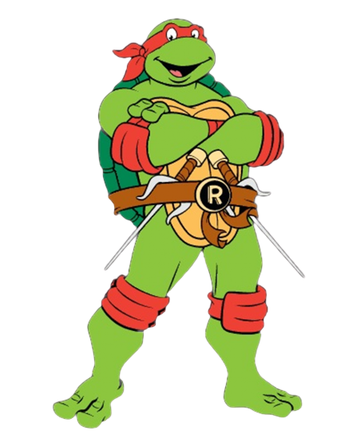

Red Turtle - Raphael
Raphael, nicknamed Raph is usually depicted wearing a red eye mask. He use twin sai as his primary weapon. known for his temperamental and cynical personality, being short-tempered, aggressive and sarcastic.